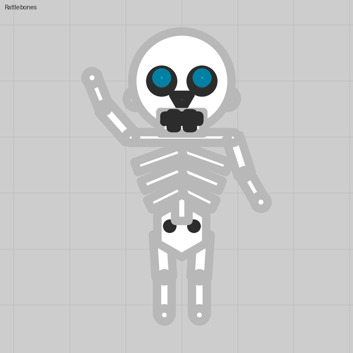

Lesson 02
Drawing with barrels
A barrel that fires nothing is a rectangle you can put anywhere, hair-thin or fanned out, even across the middle of the face.
What you see
Brows, a scar across the whole face, a horn that comes to a needle point, and a fan tail. None of these are parts: parts are polygons and circles only. They are all barrels with Fires set to Nothing.
The trick
A barrel is placed by Angle, Gap (where it starts, measured from the body's centre) and Length, and shaped by Width at base and Width at tip, both as multiples of a standard barrel's 42 units. Three things the stock tanks never do:
- Width at base 0.1 to 0.15 gives a line. Put it over the body and you can draw mouths, brows, scars, seams, veins.
- Gap can be negative. The barrel then starts behind the centre and can cross the whole body.
- Width at tip far from the base gives a needle (near 0) or a fan (larger than the base).
Numbers that matter
| Field | Range the editor accepts | Notes |
|---|---|---|
| Width at base | 0.1 to 2.5 × | 0.1 is 4 units: outline only |
| Width at tip | 0.1 × upward (the file can go lower) | Values seen in players' packs run from a needle of 0.04 to a fan of 7.5 times the base |
| Gap | −500 to 500 | Negative crosses the centre |
| Length | up to 500 | Longer is clamped on import |
Gotchas
- A decorative barrel still counts toward the 32 barrels a tank may have. Spend them on what reads at a glance.
- Leave Fires on Nothing. Give a line a projectile and it shoots.
- Barrels under the body are hidden wherever the hull covers them, which is handy for roots of horns and legs.
- The smile in lesson 01 is four of these in a row: there are no curves, only short straight pieces.
Where we used it
